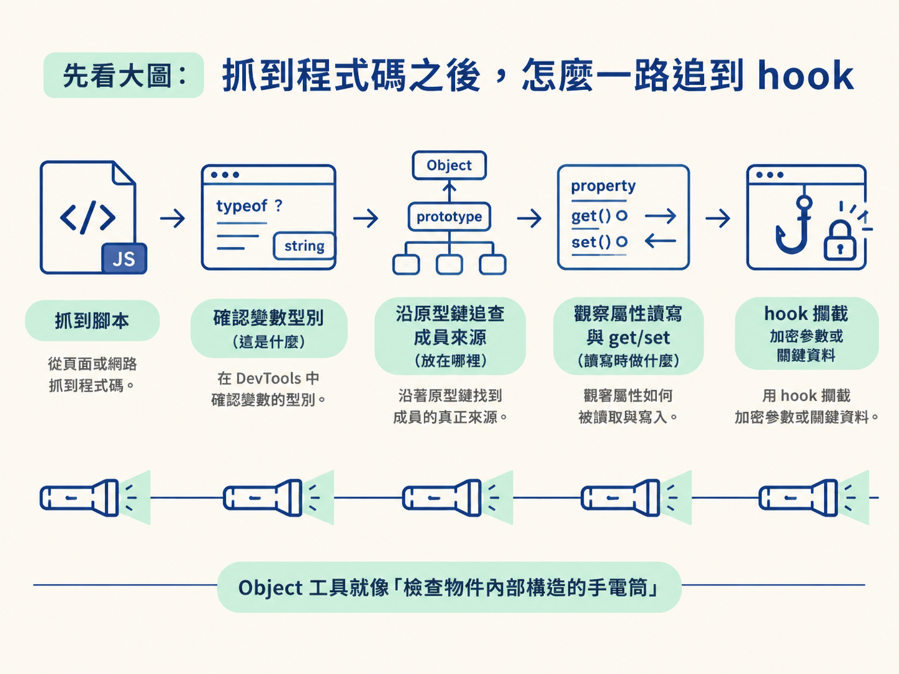
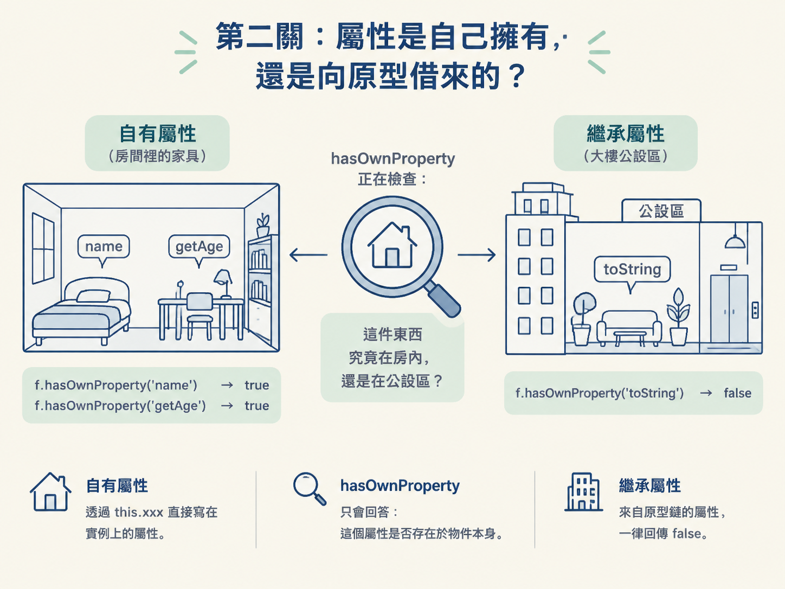
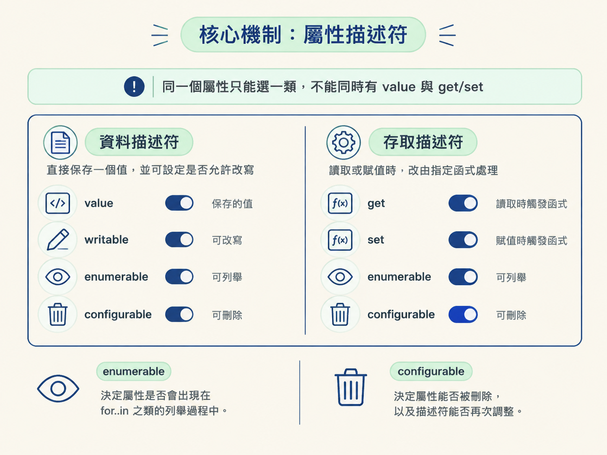
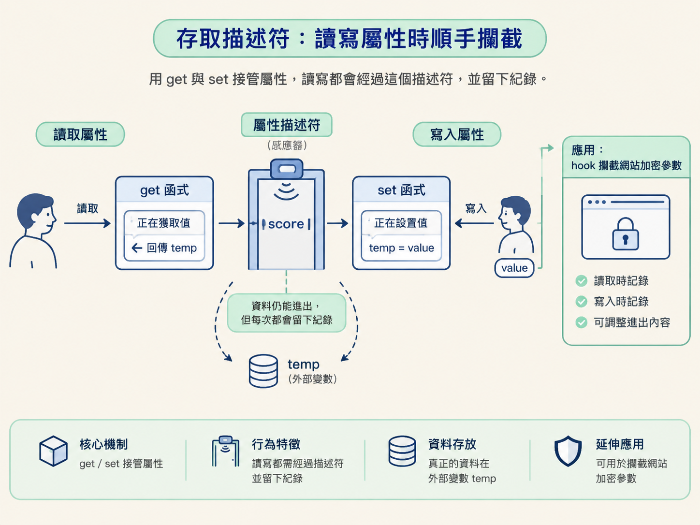

這一節要用 Object 的幾個工具，辨認值的型別、區分自有與繼承屬性，並讀懂屬性描述符。掌握這些工具後，你就能判斷一個屬性為什麼不能改、為什麼不會被列出，以及讀寫時為什麼會觸發 get/set 函式。
做 JS 逆向時，抓到腳本只是起點。接下來常要在 DevTools 裡確認變數型別、沿著原型鏈找成員，再觀察某個屬性如何被讀寫。最後，才可能用 hook 攔截加密參數或關鍵資料。
這幾件事其實連成同一條線：先確認「手上的東西是什麼」，再追查「屬性放在哪裡」，最後拆開「屬性讀寫時會做什麼」。Object 提供的工具，就像一組檢查物件內部構造的手電筒。

上一節談過原型鏈。你已經知道，成員可能放在物件本身，也可能藏在某一層原型上。但逆向時還會碰到另一種情況：你只是讀取 obj.score，背後卻執行了一段函式；你寫入 obj.score = 100，結果數值完全沒有改變。
這不是屬性忽然鬧脾氣，而是它背後的「屬性描述符」正在控制行為。一個屬性可以只是普通的值，也可以由 get/set 函式接管；它可能允許改寫與刪除，也可能像被鎖進玻璃櫃，只能看、不能碰。
之後要寫的 hook，本質上也是攔截屬性的讀取或寫入。因此，在動手 hook 之前，要先學會看懂這層機制。
在 DevTools Console 拿到一個混淆過的變數時，第一個問題通常是：「這到底是什麼？」最直覺的工具是 typeof。它判斷數字、字串、布林與函式時很好用，但遇到 null 和陣列就不夠精確。
把下面這段放進 Console 執行，可以直接看到差異：
console.log('空数组[]',typeof []);
console.log('null空',typeof null);
console.log('undefined',typeof undefined);
console.log('函数function (){}',typeof function (){});空陣列 [] 與 null 都會得到 object。如果只看這個結果，就無法判斷手上的值究竟能不能當成陣列操作。
因此，typeof 適合快速區分基本型別與函式；需要進一步分辨陣列、null 或其他物件類型時，就不該停在這裡。
更可靠的做法，是借用 Object.prototype 上的 toString，再透過 call 把目標值交給它檢查。它回傳的不是模糊的 object，而是一個帶方括號的類別標籤。
console.log(Object.prototype.toString.call(1));
console.log(Object.prototype.toString.call([]));
console.log(Object.prototype.toString.call(null));
console.log(Object.prototype.toString.call(function () {}));執行後，數字會得到 [object Number]，陣列是 [object Array]，null 則是 [object Null]。這就像把只寫著「物件」的模糊標籤，換成真正標明內容物的名牌。
這種類別標籤不只用來除錯。之後補瀏覽器環境時，某些腳本也會檢查物件回傳的標籤，藉此判斷自己是否真的執行在瀏覽器中。此時，假物件就必須表現得像原本的瀏覽器物件。
確認型別後，下一個問題通常是：「這個成員到底放在哪裡？」DevTools 雖然能展開物件與原型，但要在程式中做明確判斷，可以使用 hasOwnProperty。
它只回答一件事：指定屬性是不是直接存在於物件自己身上。從原型鏈繼承而來的屬性，一律回傳 false。
function func(){
this.name="bobo";
this.getAge=function(){}
};
f = new func();
f.hasOwnProperty('name'); //true
f.hasOwnProperty('getAge'); //true
f.hasOwnProperty('toString'); //falsename 與 getAge 是透過 this.xxx 直接寫到實例上的，所以結果是 true。toString 則來自原型鏈，因此結果是 false。
可以把物件想成一間租屋處。自有屬性是房間裡原本就放著的家具；繼承屬性則像大樓公設，住戶可以使用，但不在自己的房間裡。hasOwnProperty 檢查的，就是這件東西究竟在房內，還是在公設區。

如果要直接查看或調整原型，還有三個相關工具。Object.getPrototypeOf(f) 可以取得物件的原型，作用相當於查看 f.__proto__；Object.setPrototypeOf 能在物件建立後更換原型；Object.create(window) 則會建立一個新物件，並讓指定物件成為它的原型。
這些工具在補環境時很實用。例如要建立一個假物件，並讓它沿著原型鏈找到 window 上的成員，就可能使用 Object.create(window)。不過，如果只是確認屬性的來源，先查看原型通常就夠了，不必急著改動它。
知道屬性放在哪裡之後，還要理解它的行為。每個屬性背後都有一組設定，稱為「屬性描述符」。它像屬性的控制面板，決定這個屬性存的是普通值，還是由函式接管讀寫。
描述符分成兩大類。同一個屬性只能採用其中一類，不能一邊設定 value，一邊又用 get/set 接管。
| 類型 | 包含的欄位 | 行為 |
|---|---|---|
| 資料描述符 | value、writable、enumerable、configurable | 屬性直接保存一個值，並可設定是否允許改寫 |
| 存取描述符 | get、set、enumerable、configurable | 讀取或賦值時，改由指定函式處理 |
enumerable 決定屬性是否會出現在 for..in 之類的列舉過程中；configurable 決定屬性能否被刪除，以及描述符能否再次調整。資料描述符另外使用 writable 控制值能否透過賦值改變。

要檢查單一屬性，可以用 Object.getOwnPropertyDescriptor；要一次查看所有自有屬性，則使用 Object.getOwnPropertyDescriptors。
Object.getOwnPropertyDescriptor(f,'name');
// { value: 'bobo', writable: true, enumerable: true, configurable: true }
Object.getOwnPropertyDescriptors(f);逆向時，如果某個屬性看得到卻改不動，或明明存在卻沒有被迴圈列出來，描述符就是優先檢查的地方。它比反覆猜測賦值語法是否寫錯，更快接近真正原因。
看懂描述符後，也可以反過來安裝屬性。一般直接指定的屬性，通常是保存值的資料屬性；使用 Object.defineProperty 時，則可以明確決定每一個開關。
Object.defineProperty(User, "height", {
enumerable:true, //该属性是否可遍历
configurable:true,//该属性是否可配置:决定该属性是否可以被删除或修改其属性描述符。
value:160, //属性的值
writable:false //该属性的值是否可以通过赋值运算符改变
});這裡把 writable 設成 false，所以之後即使執行 User.height = 180，屬性值也不會照一般可寫屬性那樣改變。
如果將 enumerable 設為 false，屬性仍然存在，也可以直接讀取，但不會被 for..in 列出來。混淆程式碼有時會利用這種落差，讓只靠列舉檢查物件的人漏看某些成員。
資料描述符適合用在「屬性就是一個值，只需要控制能不能改、能不能列出」的情況。如果目標是觀察每一次讀取與寫入，就要換成存取描述符。
存取描述符使用 get 與 set 接管屬性。讀取屬性時執行 get，賦值時則執行 set。這已經非常接近 hook 的基本形狀。
Object.defineProperty(Stu, "score", {
enumerable:true,
configurable:true,
get:function (){// 当获取属性值是调用
console.log("正在获取值");
return temp;
},
set:function (value){// 当对属性进行赋值操作时调用
console.log("正在设置值");
temp = value;
}
});這個屬性沒有設定 value 與 writable，而是改用 get/set。真正的資料放在外部變數 temp，所有讀寫都先通過這兩個函式。
這就像在門口加裝感應器。資料仍然能進出，但每一次通過都會留下動靜。之後若要攔截網站產生的加密參數，就能利用同樣的機制，在值被讀取或寫入時記錄它，甚至調整進出的內容。

不過，這種手法只適合屬性讀寫確實會經過該描述符的情況。動手前還是要先確認屬性位於物件本身或哪一層原型，以及它的 configurable 是否允許重新定義。否則，hook 裝錯位置，就像在隔壁家的門口裝感應器，目標資料根本不會經過。
拿到陌生值時，先用
typeof做快速判斷；若要分辨陣列、null或其他物件類型，再用Object.prototype.toString.call查看類別標籤。找到目標屬性後，用hasOwnProperty與原型工具確認它放在哪裡，再透過屬性描述符理解它為什麼可寫、不可寫、可列舉，或會觸發 get/set。最後，Object.defineProperty才把這些觀念接到 hook 上。
這些工具不是彼此分散的 API，而是一條完整的檢查路線：辨認值、追查來源、拆解行為，再決定是否攔截。它們也把上一節的原型鏈，接到了後面的環境補全與 hook。
接下來要回到執行環境。從瀏覽器抓出的 JS 丟進 Node 後，常會因為缺少瀏覽器物件而立刻報錯。下一節將繼續處理 window 與 global 的差異，並看看該如何把缺少的環境補起來。